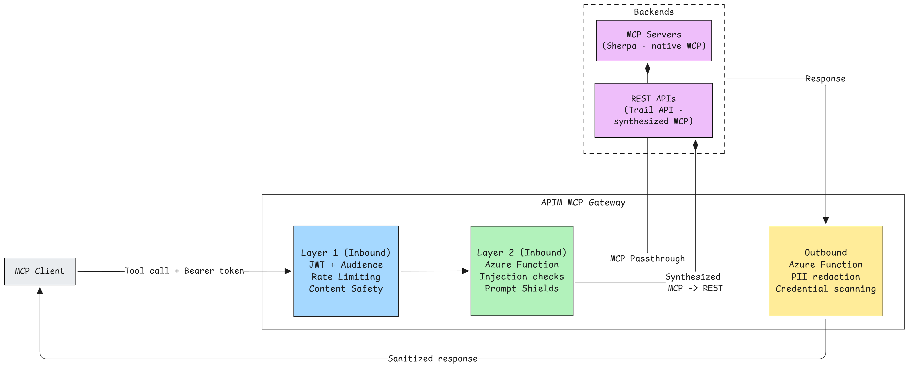
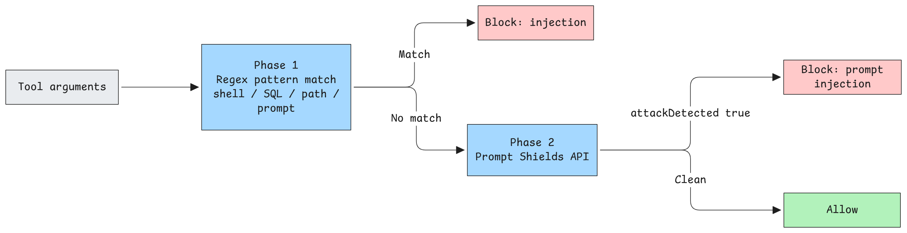

Input validation, output sanitization, and data-handling defenses for MCP tools.
Welcome to Camp 3, where the terrain gets treacherous. You've secured your base camp with OAuth and set up Content Safety to catch the obvious dangers, but experienced climbers know that the most dangerous hazards are the ones you don't see coming. A crevasse hidden under fresh snow. A loose handhold that looks solid. A weather pattern that shifts without warning.
In the MCP world, these hidden dangers are technical injection attacks (shell commands disguised as location queries, SQL payloads masquerading as search terms, path traversal attempts that look like innocent file requests). Content Safety won't catch them because they're not "harmful content" to an AI model. They're surgical strikes targeting your backend systems.
And there's another danger on this route: data leaking out. Your APIs might be returning SSNs, phone numbers, and addresses to any client that asks nicely. Content Safety only watches the door going in, it doesn't check what's walking out.
Camp 3 adds Layer 2 security: Azure Functions that perform advanced input validation and output sanitization. You'll witness these attacks succeed, then deploy the defenses that stop them cold.
This camp follows the same "vulnerable → exploit → fix → validate" methodology, but focuses on the data flowing through your MCP servers rather than access control.
Camp Details
Tech Stack: Python, MCP, Azure Functions, Azure AI Services (Language), Azure API Management Primary Risks: MCP05 (Command Injection & Execution), MCP06 (Intent Flow Subversion), MCP03 (Tool Poisoning), MCP10 (Context Injection & Over-Sharing)
What You'll Learn¶

Building on Camp 2's gateway foundation, you'll master I/O security for MCP servers:
Learning Objectives
- Understand why Layer 1 (Content Safety) isn't sufficient for technical injection attacks
- Deploy Azure Functions as security middleware for APIM
- Implement technical injection pattern detection (shell, SQL, path traversal)
- Configure PII detection and redaction using Azure AI Language
- Add credential scanning to prevent secret leakage
- Understand defense-in-depth architecture for I/O security
Prerequisites¶
Before starting Camp 3, ensure you have the required tools installed.
Prerequisites Guide
See the Prerequisites page for detailed installation instructions, verification steps, and troubleshooting.
Quick checklist for Camp 3:
- Azure subscription with Contributor access
- Azure CLI (authenticated)
- Azure Developer CLI - azd (authenticated)
- Docker (installed and running)
- Completed Camp 2 (recommended for OAuth context)
Verify your setup:
Getting Started¶
Clone the Workshop Repository¶
If you haven't already cloned the repository (from a previous camp), skip to the next step.
Navigate to the Camp 3 directory:
Windows Users
All scripts in this camp have PowerShell equivalents (.ps1). When you see ./scripts/X.sh, you can run ./scripts/X.ps1 instead.
Deploy Camp 3¶
Before climbing through the waypoints, deploy all Azure infrastructure and application code.
Full Deployment (Infrastructure + Code)
This creates all the infrastructure and deploys the application code for Camp 3:
When prompted:
- Environment name: Choose a name (e.g.,
camp3-dev) - Subscription: Select your Azure subscription
- Location: Select your Azure region (e.g.,
westus2,eastus)
What gets deployed?
The azd up command provisions infrastructure AND deploys application code:
Infrastructure (~15 minutes):
- API Management (Basic v2) — MCP gateway with OAuth + Content Safety
- Container Registry — For container images
- Container Apps Environment — Hosts the MCP servers
- Azure Function App (Flex Consumption) — For security functions
- Azure AI Services — PII detection via Language API
- Content Safety (S0) — Layer 1 content filtering
- Storage Account — For Function App state
- Log Analytics — Monitoring and diagnostics
- Managed Identities — For APIM, Container Apps, and Functions
Application Code (~5 minutes):
- Sherpa MCP Server — Python MCP server deployed to Container Apps
- Trail API — REST API with permit endpoints deployed to Container Apps
- Security Function — Input check and output sanitization functions
Post-Provision Configuration:
- Sherpa MCP API — Native MCP passthrough to Container App
- Trail MCP API — APIM-synthesized MCP from Trail REST API
- Trail REST API — Backend for Trail MCP
- OAuth validation — JWT validation with
mcp.accessscope on all MCP endpoints - RFC 9728 PRM discovery — Enables VS Code OAuth autodiscovery (see Camp 2 for details)
- Content Safety — Layer 1 filtering on all APIs
Note: The security function is deployed but not yet wired to APIM. You'll do that in Waypoint 1.2 after seeing why it's needed.
Expected time: ~20 minutes
When provisioning completes, save these values:
Reference¶
Optional deep-dive content for those who want to understand the architecture and design decisions before (or after) the hands-on waypoints.
Why Layer 2 Security?
The Problem: Azure AI Content Safety (Layer 1) with Prompt Shields is excellent at detecting harmful content and AI-focused attacks like jailbreaks. But it's not designed for technical injection patterns:
- Shell injection -- "summit; cat /etc/passwd" isn't harmful content to an AI model
- SQL injection -- "' OR '1'='1" doesn't trigger hate/violence/jailbreak filters
- Path traversal -- "../../etc/passwd" is just a file path, not a prompt attack
- PII in responses -- Content Safety only checks inputs, not outputs
Content Safety's Prompt Shields (enabled via shield-prompt="true" in Camp 2) does catch many prompt injection attacks, especially jailbreaks that try to manipulate AI behavior. However, technical injection patterns like shell commands and SQL aren't AI manipulation attempts; they're traditional injection attacks that Prompt Shields isn't designed to detect.
The Solution: Add a second layer of security with specialized Azure Functions:
| Layer | Component | Purpose | Speed |
|---|---|---|---|
| 1 | Content Safety | Harmful content, jailbreaks, prompt injection | ~30ms |
| 2 | input_check Function |
Technical injection patterns (shell, SQL, path) | ~50ms |
| 2 | sanitize_output Function |
PII redaction, credential scanning | ~100ms |
| 3 | Server-side validation | Last line of defense (Pydantic) | In-server |
Together, these layers provide comprehensive protection for MCP I/O operations.
Architecture

Camp 3 deploys a layered security architecture where APIM orchestrates inbound security checks, while output sanitization strategy varies by backend type.
┌─────────────────────────────────────────────────────────────────────────────┐
│ APIM Gateway │
│ │
│ ┌─────────────────────────────┐ ┌─────────────────────────────┐ │
│ │ sherpa-mcp │ │ trail-mcp │ │
│ │ (real MCP proxy) │ │ (synthesized MCP) │ │
│ │ │ │ │ │
│ │ INBOUND: │ │ INBOUND: │ │
│ │ • OAuth validation │ │ • OAuth validation │ │
│ │ • Content Safety (L1) │ │ • Content Safety (L1) │ │
│ │ • input_check (L2) │ │ • input_check (L2) │ │
│ │ │ │ │ │
│ │ OUTBOUND: │ │ OUTBOUND: │ │
│ │ • (none - server-side) │ │ • (none - see trail-api) │ │
│ └──────────────┬──────────────┘ └──────────────┬──────────────┘ │
│ │ │ │
│ │ ┌──────────────┴──────────────┐ │
│ │ │ trail-api │ │
│ │ │ (REST API backend) │ │
│ │ │ │ │
│ │ │ OUTBOUND: │ │
│ │ │ • sanitize_output │ │
│ │ └──────────────┬──────────────┘ │
│ │ │ │
└────────────────────┼─────────────────────────────────────┼──────────────────┘
│ ▼
▼ ┌─────────────────────┐
┌─────────────────────┐ │ Trail Container │
│ Sherpa Container │ │ App (REST API) │
│ App (Python MCP) │ └─────────────────────┘
│ │
│ SERVER-SIDE: │
│ • sanitize_output │
└─────────────────────┘
Two MCP Server Patterns with Different Sanitization Strategies:
| Server | Type | Output Sanitization | Where | Why |
|---|---|---|---|---|
| Sherpa MCP | Native passthrough | ✓ Server-side | In MCP server | Streamable HTTP uses SSE format |
| Trail MCP | APIM-synthesized | ✗ Not possible | N/A | APIM controls SSE stream |
| Trail API | REST backend | ✓ APIM outbound | APIM policy | JSON response, then wrapped in SSE |
Why Server-Side Sanitization for Sherpa MCP?
FastMCP's Streamable HTTP transport always returns Content-Type: text/event-stream, even for instant, complete responses. APIM outbound policies cannot reliably distinguish between a complete response delivered as an SSE event and a long-running stream that will timeout.
The solution: move sanitization inside the MCP server. The get_guide_contact tool calls the sanitize-output Azure Function directly before returning data, ensuring PII is always redacted regardless of transport format.
For trail-api, standard REST responses use application/json, so APIM outbound sanitization works normally. The sanitized JSON is then wrapped in SSE events by the trail-mcp API.
Understanding MCP Transports
Streamable HTTP is the standard MCP transport for remote servers:
| Aspect | How It Works |
|---|---|
| Request | Standard HTTP POST to /mcp endpoint |
| Request Body | JSON-RPC 2.0 payload |
| Response | Either single JSON or SSE stream (server decides) |
Client MCP Server
│ │
│ POST /mcp │
│ Content-Type: application/json │
│ {"jsonrpc": "2.0", ...} │
│ ──────────────────────────────────────────────────────────>│
│ │
│ Response (one of): │
│ A) Content-Type: application/json ← Single response │
│ B) Content-Type: text/event-stream ← SSE stream │
│ <──────────────────────────────────────────────────────────│
Two patterns in this workshop:
| Pattern | Backend | APIM Role | Streaming Handled By |
|---|---|---|---|
| Native MCP | sherpa-mcp-server (FastMCP) | Passthrough proxy | Backend server |
| Synthesized MCP | trail-api (REST) | Protocol translator | APIM |
- Native MCP: Building new AI-first services with full MCP protocol support
- Synthesized MCP: Exposing existing REST APIs to AI agents without code changes
Why this matters for output sanitization: The outbound policy reads context.Response.Body.As<string>(), which works only when the response is complete before the policy runs. SSE streams may timeout or return partial data, which is why native MCP servers use server-side sanitization instead.